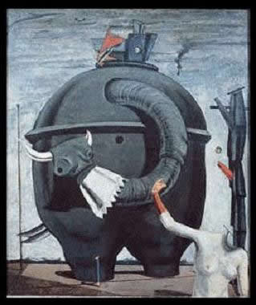
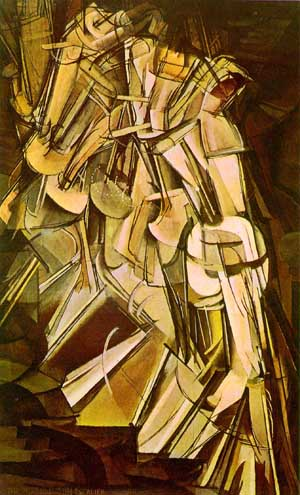

Introdução
O dadaísmo foi um movimento artístico que surgiu na Europa (cidade suíça de Zurique) no ano de 1916. Possuía como característica principal a ruptura com as formas de arte tradicionais. Portanto, o dadaísmo foi um movimento com forte conteúdo anárquico. O próprio nome do movimento deriva de um termo inglês infantil: dadá (brinquedo, cavalo de pau). Daí, observa-se a falta de sentido e a quebra com o tradicional deste movimento.
Características principais do dadaísmo:
- Objetos comuns do cotidiano são apresentados de uma nova forma e dentro de um contexto artístico
- Irreverência artística;
- Combate às formas de arte institucionalizadas;
- Crítica ao capitalismo e ao consumismo;
- Ênfase no absurdo e nos temas e conteúdos sem lógica;
- Uso de vários formatos de expressão (objetos do cotidiano, sons, fotografias, poesias, músicas, jornais, etc) na composição das obras de artes plásticas;
- Forte caráter pessimista e irônico, principalmente com relação aos acontecimentos políticos do mundo.
Questões do enem
Questão 1
No programa do balé Parade, apresentado em 18 de maio de 1917, foi empregada publicamente, pela primeira vez, a palavra sur-realisme. Pablo Picasso desenhou o cenário e a indumentária, cujo efeito foi tão surpreendente que se sobrepôs à coreografia. A música de Erik Satie era uma mistura de jazz, música popular e sons reais tais como tiros de pistola, combinados com as imagens do balé de Charlie Chaplin, caubóis e vilões, mágica chinesa e Ragtime. Os tempos não eram propícios para receber a nova mensagem cênica demasiado provocativa devido ao repicar da máquina de escrever, aos zumbidos de sirene e dínamo e aos rumores de aeroplano previstos por Cocteau para a partitura de Satie. Já a ação coreográfica confirmava a tendência marcadamente teatral da gestualidade cênica, dada pela justaposição, colagem de ações isoladas seguindo um estímulo musical.
As manifestações corporais na história das artes da cena muitas vezes demonstram as condições cotidianas de um determinado grupo social, como se pode observar na descrição acima do balé Parade, o qual reflete
A) a falta de diversidade cultural na sua proposta estética.
B) a alienação dos artistas em relação às tensões da Segunda Guerra Mundial..
C) uma disputa cênica entre as linguagens das artes visuais, do figurino e da música.
D) as inovações tecnológicas nas partes cênicas, musicais, coreográficas e de figurino.
E) uso de vários ícones que representam personagens fragmentados bidimensionalmente, de forma fotográfica livre de sentimentalismo.
Algumas obras
Max Ernest O gigante acéfalo 1937
Marcel Duchamp Nu descendo a escada 1912
